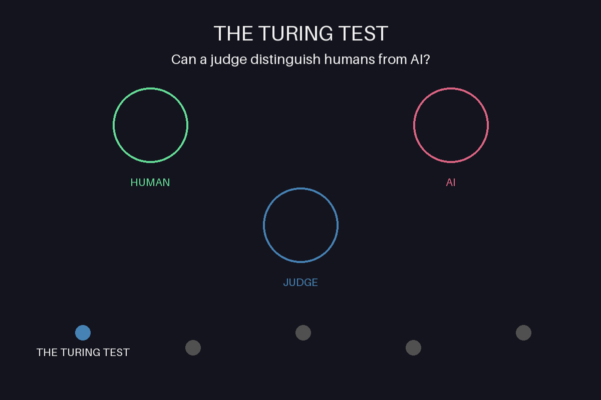

The Turing Test
1950
In 1950, Alan Turing proposed the "Turing Test" as a measure of machine intelligence in his groundbreaking paper titled "Computing Machinery and Intelligence", published in "Mind".
The paper opens by addressing the question, "Can machines think?" Turing acknowledges that defining the terms "machine" and "thinking" can lead to ambiguous debates. To avoid this, he reformulates the question into a more practical framework known as the Imitation Game.
The Imitation Game involves three participants: a man (A), a woman (B), and an interrogator (C). Communication occurs through written messages, ensuring no visual or auditory clues are available. The interrogator's goal is to determine which participant is the man and which is the woman based solely on their responses. If the role of A is taken by a machine, and the interrogator cannot reliably distinguish between the machine and the human, the machine passes the test.
Turing emphasizes that the focus is not on physical imitation but on intellectual interaction. He argues that digital computers—designed with components like a store for information, an executive unit for processing, and a control system for managing operations—are ideal candidates for participating in the Imitation Game. These computers are essentially universal discrete state machines capable of simulating human-like responses.
Turing also addresses several objections to the idea of thinking machines:
- Theological Objection: Argues that thinking requires a soul, which machines lack. Turing counters that limiting God’s ability to grant a soul to a machine is presumptuous.
- "Heads in the Sand" Objection: Reflects fears that machines surpassing humans would diminish humanity's uniqueness. Turing dismisses this as resistance to technological progress.
- Mathematical Objection: Highlights limitations of formal systems like Gödel’s theorem. Turing notes similar limitations may apply to humans.
- Argument from Consciousness: Claims machines cannot feel emotions or self-awareness. Turing suggests consciousness is hard to define and verify even in humans.
- Arguments from Disabilities: States machines can never be creative or emotional. Turing replies these traits could potentially be simulated through programming.
- Informality of Behaviour: Suggests human behavior is too unpredictable for rule-based machines. Turing argues machines can still behave unpredictably despite following rules.
- Extra-Sensory Perception (ESP): Speculates ESP might affect the test results. Turing acknowledges this possibility but insists it can be mitigated with proper modifications.
Turing concludes by envisioning a future where learning machines—akin to child brains—can be educated through rewards, punishments, and logical systems. By mimicking the learning process of a child, machines can develop complex, adaptive behaviors over time.
Ultimately, the Turing Test serves not only as a benchmark for artificial intelligence but also as a catalyst for research into creating machines capable of sophisticated, human-like interactions.
Before & After
Pre-AI Philosophy
Philosophers like Descartes and Leibniz speculated about mechanical minds.
Dartmouth Conference (1956)
Artificial Intelligence is officially coined as a field of study.
Turing Machine in Action
